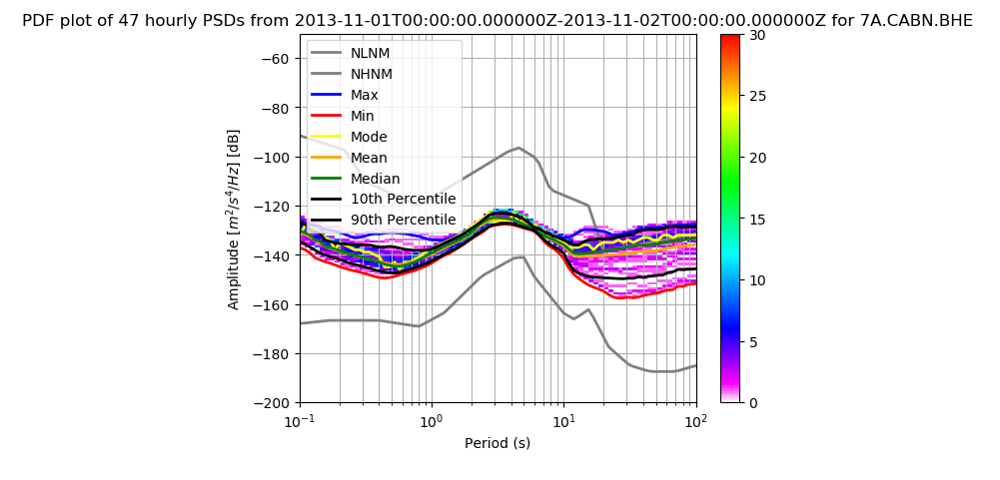

pycheron.plotting.psdPlot¶
-
psdPlot(st, style='psd', f_name=None, showNoiseModel=True, showMaxMin=False, showMode=False, showMean=False, showMedian=True, showEnvelope=True, envelopeType='10_90', showSingle=False, singleType=None, pcolor=<matplotlib.colors.LinearSegmentedColormap object>, timespan=0, evalresp=None, network=None, station=None, channel=None, location=None, session=None, database=None, logger=None)[source]¶ Plot instrument corrected noise values of PSDs and PDFs
Parameters: - st (obspy.core.stream.Stream or pycheron.db.sqllite_db.Database) – (stream object or Database) - PSD or PDF as output from getNoise or getPDF or Database object
- style (str) – String to determine plotting style, options include psd or pdf
- showNoiseModel (bool) – If True, display noise models on the plot
- showMaxMin (bool) – (boolean) - If True, display max and min on the plot
- showMode (bool) – (boolean) - If True, display mode on the plot
- showMean (bool) – (boolean) - If True, display mean on the plot
- showMedian (bool) – (boolean) - If True, display median on the plot
- showEnvelope (boo;) – (boolean) - If true, percentile envelope will be plotted.
- envelopeType (str) – (str) - envelope to be plotted (Default=‘10_90”) “10_90” - 10th and 90th percentile envelope “05_95” - 5th annd 95th percentile envelope
- showSingle (bool) – (bool) - if True, plot single percentile.
- singleType (str) – Single line percentile to be plotted. Options: “5” (5th percentile), “10” (10th percentile) “90” ( 90th percentile), “95” (95th percentile).
- pcolor (obspy.imaging.cm) – (colormap) - color map to utilize in plots
- evalresp (str or numpy.ndarray) – evalresp directory or np.ndarray
- timespan (int) – (int) Time span for plots to be broken up into. 1 - 1 week, 2 - 2 weeks, 4 - 1 month, Any other int will result in all data being processed.
- network (str) – If using database, network name
- station (str) – If using database, station name
- channel (str) – If using database, channel name
- location (str) – If using database, location name
- session (str) – If using database, session name
- database (pycheron.db.sqllite_db.Database) – database object
- logger (pycheron.util.logger.Logger) – logger object
Example
- PSD Plot
#PSD Plot import obspy from pycheron.psd.psdList import psdList from pycheron.psd.psdStatistics import psdStatistics from pycheron.plotting.psdPlot import psdPlot from pycheron.psd.getPDF import getPDF from pycheron.psd.noise.getNoise import getNoise from pycheron.psd.noise.noiseModel import noiseModel from obspy.imaging.cm import pqlx data = 'test/test_data/7a_cabn_bhe.884965.tar.mseed' #reading in stream - show PSD with Statistics and NHNM/NLNM st = obspy.read(data) psdPlot(st,style='psd', showNoiseModel=True, showMaxMin=True, showMode=True, showMean=True, showMedian=True, showEnvelope=True, envelopeType="10_90",pcolor=pqlx)
- PDF Plot
#PDF Plot import obspy from pycheron.psd.psdList import psdList from pycheron.psd.psdStatistics import psdStatistics from pycheron.plotting.psdPlot import psdPlot from pycheron.psd.getPDF import getPDF from pycheron.psd.noise.getNoise import getNoise from pycheron.psd.noise.noiseModel import noiseModel from obspy.imaging.cm import pqlx data = 'test/test_data/7a_cabn_bhe.884965.tar.mseed' #reading in stream - show PSD with Statistics and NHNM/NLNM st = obspy.read(data) psdPlot(st,style='pdf', showNoiseModel=True, showMaxMin=True, showMode=True, showMean=True, showMedian=True, showEnvelope=True, envelopeType="10_90",pcolor=pqlx)